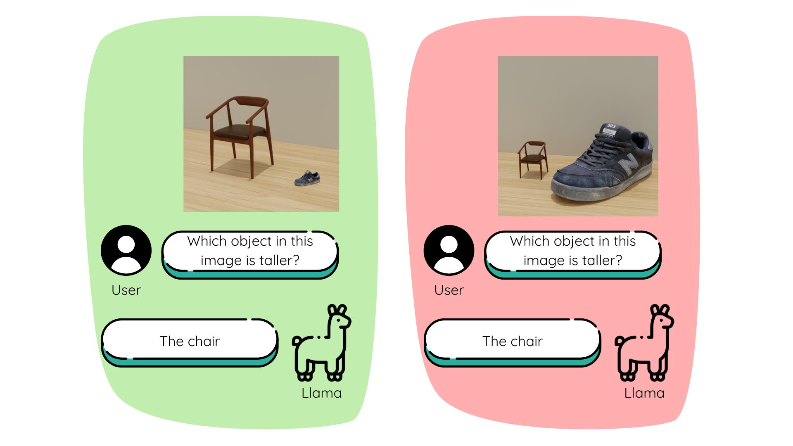
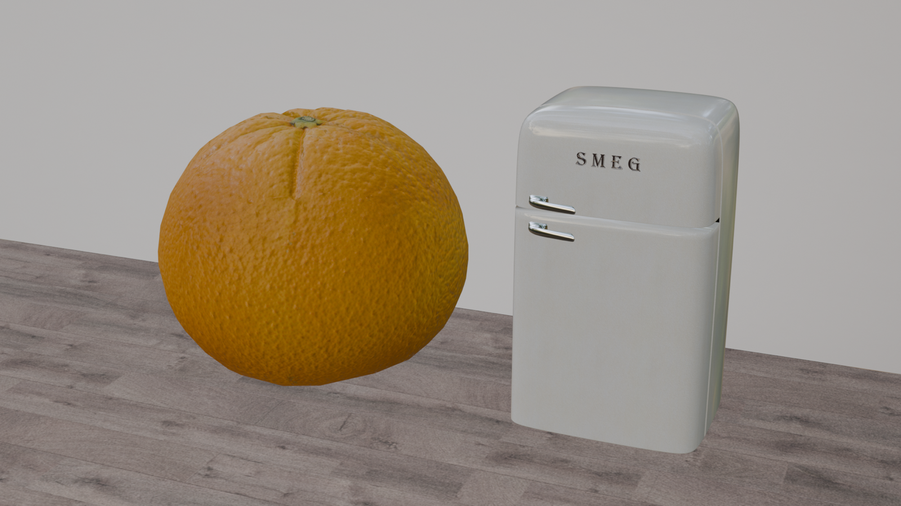
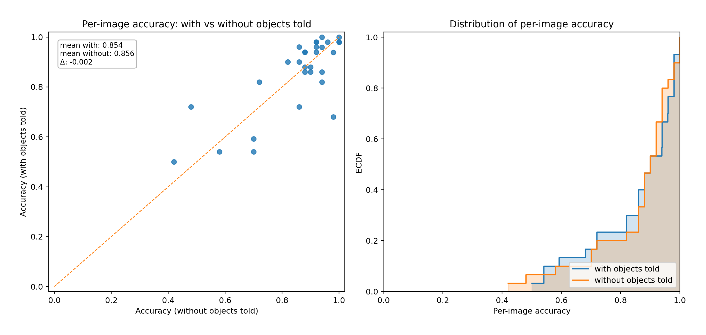

01
Evaluating Size-Based Relational Reasoning in VLMs
Do vision-language models reason from what they see, or fall back on familiar real-world proportions? We built a controlled synthetic benchmark in Blender and evaluated Llama 3.2 Vision on object identification and height comparison under natural, inverted, and exaggerated size ratios.
- Dataset 10 object pairs, 3 size conditions
- Study VLM evaluation and 32-person human study
- Tools Blender, Python, Llama 3.2 Vision



Key finding: Inverting expected object-size relationships significantly reduced the model's visual height-comparison accuracy without object labels, while human participants achieved 100% accuracy across all conditions.